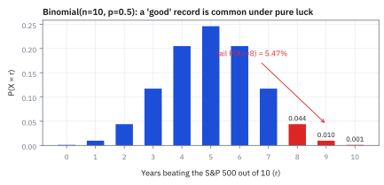
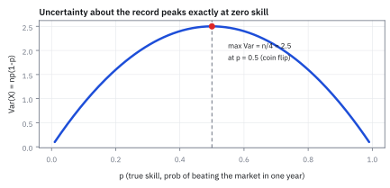
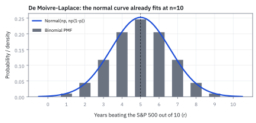
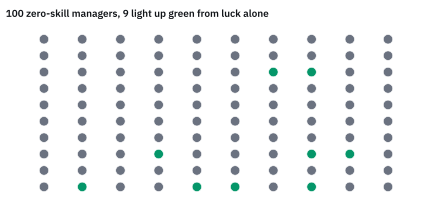
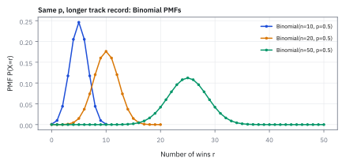

1.5 The Binomial Distribution
นับจำนวนครั้งที่สำเร็จจากการลองแบบเดิมหลายรอบ
โยนเหรียญ 3 ครั้ง ได้หัวพอดี 2 ครั้งมีกี่แบบ และมีโอกาสเท่าไร?
เฉลย: 3 แบบ คือ หัว-หัว-ก้อย, หัว-ก้อย-หัว และก้อย-หัว-หัว จากทั้งหมด 8 แบบที่โอกาสเท่ากัน จึงได้ 3/8 เคล็ดคือไม่ต้องไล่เขียนทุกแบบ แค่ถามว่าก้อยตัวเดียวไปอยู่ช่องไหนได้บ้าง ซึ่งมี 3 ช่อง
ทั้งหัวข้อนี้คือเคล็ดเดียวกันที่ขยายใหญ่ขึ้น: เปลี่ยนเหรียญเป็นปี เปลี่ยนหัวเป็นปีที่ชนะตลาด แล้วใช้ตอบว่าผู้จัดการกองทุนที่ชนะ 8 ปีจาก 10 ปีเก่งจริงหรือแค่ดวงดี เครื่องมือนี้ชื่อ Binomial distribution
คำถามจริงบนโต๊ะ: ฝีมือหรือดวง
ผู้จัดการกองทุนคนหนึ่งทำผลตอบแทนชนะดัชนี S&P 500 ได้ 8 ปีจาก 10 ปีล่าสุด เงินของนักลงทุนไหลเข้าเพราะ track record แบบนี้ จน Assets Under Management (AUM) ของกองโตขึ้นทุกปี ก่อนเราจะย้ายเงินตามไปและจ่ายค่าธรรมเนียม ขอถามแบบวิศวกรก่อนหนึ่งข้อ
ถ้าเขาไม่มีฝีมือเลย ผลงานดีขนาดนี้จะเกิดขึ้นได้บ่อยแค่ไหน คำว่าไม่มีฝีมือแปลเป็นตัวเลขได้ตรง ๆ: ทุกปีมีโอกาสชนะตลาดครึ่งหนึ่ง เหมือนโยนเหรียญ และปีหนึ่งไม่เกี่ยวกับอีกปี ถ้าโอกาสที่ได้ออกมาไม่ต่ำ ผลงาน 8 ใน 10 ก็ยังไม่ใช่หลักฐานของฝีมือ
ศัพท์ที่ใช้ในหัวข้อนี้
- Binomial distribution
- ตารางโอกาสของจำนวนครั้งที่สำเร็จ เมื่อลองสิ่งเดิมซ้ำจำนวนครั้งที่กำหนด แต่ละครั้งมีสองผลและโอกาสคงที่ ใช้ตอบว่าชนะกี่ปีจากสิบปี
- Bernoulli trial
- การลองหนึ่งครั้งที่มีผลแค่สองแบบ คือสำเร็จหรือไม่สำเร็จ เช่นปีหนึ่งชนะหรือแพ้ตลาด ใช้เป็นก้อนอิฐที่ Binomial นำมาต่อกัน
- Probability Mass Function (PMF)
- สูตรหรือตารางที่บอกโอกาสของแต่ละค่าที่นับได้ เช่นโอกาสชนะพอดี 0, 1, 2, … ถึง 10 ปี ใช้อ่านแท่งทีละแท่งในกราฟ
- track record
- ประวัติผลงานย้อนหลัง ใช้ประเมินฝีมือของผู้จัดการกองทุนหรือกลยุทธ์
- beat the market
- ทำผลตอบแทนได้สูงกว่าดัชนีอ้างอิงในช่วงเดียวกัน เช่นสูงกว่า S&P 500 ในปีนั้น
- Assets Under Management (AUM)
- มูลค่าเงินทั้งหมดที่กองทุนดูแลอยู่ หน่วยเป็นดอลลาร์ ใช้วัดขนาดกอง ไม่ใช่จำนวนผู้จัดการหรือจำนวนปี
- sample space
- รายการผลลัพธ์ทั้งหมดที่เป็นไปได้ ในที่นี้คือทุกลำดับชนะแพ้ของสิบปี ใช้ตรวจว่านับครบไม่ตกหล่น
- indicator
- ตัวนับที่เป็น 1 เมื่อเหตุการณ์เกิด และเป็น 0 เมื่อไม่เกิด ใช้แปลงการนับให้เป็นการบวก
- variance
- ค่าเฉลี่ยของระยะห่างจากค่าเฉลี่ยที่ยกกำลังสองแล้ว ใช้วัดว่าจำนวนปีที่ชนะเหวี่ยงกว้างแค่ไหน (สร้างเต็มในหัวข้อ 1.4)
- standard deviation
- รากที่สองของ variance ใช้บอกความผันผวนในหน่วยเดิม ในที่นี้คือหน่วยปี
- z-score
- ระยะห่างจากค่าเฉลี่ย วัดเป็นจำนวนเท่าของ standard deviation ใช้บอกว่าผลที่เห็นแปลกแค่ไหน
- Normal distribution
- รูปทรงระฆังคว่ำที่สมมาตร ใช้ประมาณแท่ง Binomial เมื่อจำนวนครั้งมาก (สร้างเต็มในหัวข้อ 1.9)
- continuity correction
- การเลื่อนขอบครึ่งช่องตอนเอาเส้นโค้งไปประมาณแท่งที่กว้างแท่งละหนึ่งหน่วย ใช้ให้พื้นที่ใต้เส้นโค้งตรงกับแท่งที่ต้องการ
- survivorship bias
- อคติจากการเห็นแต่คนที่รอดหรือเด่น แล้วมองข้ามคนส่วนใหญ่ที่แพ้และหายไปจากตลาด
- data mining
- การค้นในข้อมูลหรือคนจำนวนมากจนเจอสิ่งที่ดูเด่น ซึ่งหลายครั้งเด่นเพราะบังเอิญ ใช้อธิบายว่าทำไมผู้ชนะที่คัดจากคนนับพันจึงดูเก่งเกินจริง
- Bayes' theorem
- กฎคำนวณโอกาสย้อนทิศ ใช้เปลี่ยนโอกาสที่จะเห็นผลงานนี้ถ้าไม่มีฝีมือ ให้เป็นโอกาสที่เขาไม่มีฝีมือเมื่อเห็นผลงานแล้ว (ศึกษาเต็มในหัวข้อ 1.7)
สัญลักษณ์ที่ใช้ในหัวข้อนี้
| สัญลักษณ์ | ความหมาย | หน่วย |
|---|---|---|
| $n$ | จำนวนครั้งที่ลองทั้งหมด ในที่นี้คือจำนวนปี | ครั้ง |
| $r$ | จำนวนครั้งที่สำเร็จที่สนใจ ในที่นี้คือจำนวนปีที่ชนะ | ครั้ง |
| $p$ | โอกาสสำเร็จในหนึ่งครั้ง | 0 ถึง 1 |
| $X$ | จำนวนครั้งที่สำเร็จจริง ซึ่งยังไม่รู้ก่อนเห็นผล | ครั้ง |
| $B_i$ | indicator ของครั้งที่ $i$ เป็น 1 ถ้าสำเร็จ เป็น 0 ถ้าไม่สำเร็จ | — |
| $\binom{n}{r}$ | จำนวนลำดับที่มีความสำเร็จ $r$ ครั้งจาก $n$ ครั้ง อ่านว่า n choose r | แบบ |
| $n!$ | ผลคูณ $n\times(n-1)\times\cdots\times1$ คือจำนวนวิธีเรียงของ $n$ ชิ้นที่ติดป้ายต่างกัน | แบบ |
| $\mathbb{E}[X]$ | ค่าเฉลี่ยของจำนวนครั้งที่สำเร็จ | ครั้ง |
| $\mathrm{Var}(X)$, $\sigma$ | variance และ standard deviation ของจำนวนครั้งที่สำเร็จ | ครั้ง², ครั้ง |
| $M$ | จำนวนผู้จัดการกองทุนที่ถูกนำมาคัดเลือก | คน |
| $q$ | โอกาสที่ผู้จัดการหนึ่งคนผ่านเกณฑ์ผลงาน เช่นชนะ 8 ปีขึ้นไป | 0 ถึง 1 |
โจทย์: ตัวเลขบนโต๊ะ
| สัญลักษณ์ | ค่า | ความหมาย |
|---|---|---|
| $n$ | 10 | จำนวนปีทั้งหมดที่ดูผลงาน |
| $r$ | 8, 9, 10 | จำนวนปีที่ชนะตลาด ซึ่งดีเท่าหรือดีกว่าผลงานที่เห็น |
| $p$ | 0.5 | โอกาสชนะตลาดในหนึ่งปี ถ้าไม่มีฝีมือเลย |
| $1-p$ | 0.5 | โอกาสแพ้ตลาดในหนึ่งปี |
ถามว่า 8 ปีขึ้นไป ไม่ใช่ 8 ปีพอดี เพราะถ้าเห็นผลงาน 9 ปีเราก็จะประทับใจยิ่งกว่า คำถามที่ยุติธรรมคือผลงานดีเท่านี้หรือดีกว่าเกิดจากดวงได้บ่อยแค่ไหน
ขั้นที่ 1 — โอกาสของลำดับเดียวที่ระบุครบทุกปี
เริ่มจากของที่เล็กที่สุด คือลำดับเจาะจงหนึ่งลำดับ บอกครบว่าครั้งไหนออกอะไร ลองกับเหรียญ 3 ครั้งก่อน แล้วค่อยทำกับ 10 ปี
เหรียญไม่รู้ว่าครั้งก่อนออกอะไร โอกาสของทั้งแถวจึงเป็นผลคูณของโอกาสทีละครั้ง เหรียญสามครั้งได้หนึ่งในแปด ส่วนผู้จัดการที่ชนะแปดปีแรกแล้วแพ้สองปีท้ายได้หนึ่งในหนึ่งพันยี่สิบสี่
ตัวเลขนี้เล็กมาก แต่มันคือโอกาสของลำดับเดียวเท่านั้น ยังไม่ใช่คำตอบ
ลองสลับลำดับ เช่นแพ้ปีแรก ชนะแปดปีถัดมา แล้วแพ้ปีสุดท้าย ผลคูณก็ยังได้ 1/1024 เท่าเดิม เพราะแค่สลับตำแหน่งตัวคูณ ทุกลำดับที่ชนะ 8 แพ้ 2 จึงมีโอกาสเท่ากันหมด คำถามจึงเปลี่ยนจาก “ลำดับหนึ่งมีโอกาสเท่าไร” เป็น “มีกี่ลำดับที่ชนะ 8 ปีพอดี”
ขั้นที่ 2 — นับด้วยมือ: ถามว่าปีที่แพ้ไปอยู่ตรงไหน
ใช้เคล็ดเดียวกับเหรียญในคำถามเปิด คือนับตำแหน่งของผลที่มีน้อยกว่า ไล่จากกรณีง่ายไปยาก
ก้อยตัวเดียวอยู่ได้ 3 ช่อง จึงมี 3 แบบ ชนะครบสิบปีมีแบบเดียว คือไม่มีปีแพ้เลย ชนะเก้าปีแปลว่าแพ้ปีเดียว ปีนั้นเป็นปีไหนก็ได้ในสิบปี จึงมี 10 แบบ
ชนะแปดปีคือแพ้สองปี เลือกปีแพ้ปีแรกได้ 10 ทาง ปีที่สองเหลือ 9 ทาง ได้ 90 แต่แพ้ปี 3 กับปี 7 และแพ้ปี 7 กับปี 3 คือประวัติเดียวกัน ทุกคู่ถูกนับสองรอบ จึงหาร 2 ได้ 45
ขั้นที่ 3 — ทำให้การนับเป็นสูตร ใช้ได้กับทุก $n$ และ $r$
เหตุผลในขั้นที่ 2 ใช้ได้ทั่วไป: เรียงทุกปีแบบติดป้ายก่อน แล้วหารทิ้งการสลับที่ไม่ทำให้ประวัติเปลี่ยน
ถ้าทุกปีติดป้ายต่างกัน ช่องแรกเลือกได้ $n$ ปี ช่องถัดไปเหลือ $n-1$ ไล่ไปจนช่องสุดท้าย จึงเรียงได้ $n!$ แบบ ซึ่งมากเกินจริง เพราะชนะก็คือชนะ สลับปีที่ชนะกันเองแล้วประวัติไม่เปลี่ยน จึงหาร $r!$
ปีที่แพ้ก็เหมือนกัน สลับกันเองแล้วภาพเดิม จึงหารอีกครั้ง เหลือเฉพาะแบบที่ต่างกันจริง คือต่างกันที่ว่าปีไหนชนะบ้าง พอแทนตัวเลข $8!$ ตัดกับตัวเศษ เหลือสิบคูณเก้าหารสอง ตรงกับ 45 ที่นับมือไว้
บรรทัดสุดท้ายบอกว่าทำไม $0!$ ต้องเป็น 1: ชนะครบสิบปีมีแค่ลำดับเดียว เรารู้จากขั้นที่ 2 สูตรจะนับถูกก็ต่อเมื่อ $0!=1$ นี่จึงไม่ใช่ข้อตกลงลอย ๆ แต่เป็นค่าที่ทำให้การนับซื่อตรง
ขั้นที่ 4 — ตรวจว่านับครบทุกลำดับ
สิบปี ปีละสองผล มีลำดับทั้งหมดกี่แบบ แล้วจำนวนแบบของทุก $r$ ตั้งแต่ 0 ถึง 10 รวมกันต้องได้เท่านั้นพอดี
ปีแรกมีสองทาง แต่ละทางแตกเป็นสองทางในปีที่สอง ไปจนปีที่สิบ ได้ 1,024 ลำดับ นี่คือ sample space ทั้งหมด
อีกด้านคือจำนวนแบบของชนะ 0, 1, 2 ไปจนถึง 10 ปี จากสูตรขั้นที่ 3 บวกกันครบสิบเอ็ดก้อนได้ 1,024 เท่ากันพอดี แปลว่าทุกลำดับถูกนับครั้งเดียว ไม่มีตกหล่น ไม่มีนับซ้ำ
สี่เงื่อนไขที่ทำให้นับแบบนี้ได้
ทุกขั้นที่ผ่านมาพิงของสี่อย่าง: แต่ละปีมีแค่สองผล จำนวนปีกำหนดไว้ก่อน โอกาสชนะเท่ากันทุกปี และปีหนึ่งไม่เกี่ยวกับอีกปี การลองหนึ่งครั้งแบบนี้เรียกว่า Bernoulli trial ถ้าข้อไหนไม่จริง ตารางข้อจำกัดท้ายหัวข้อบอกว่าคำตอบจะเพี้ยนไปทางไหน
ขั้นที่ 5 — ประกอบเป็นสูตร Binomial PMF
ตอนนี้มีครบสองชิ้น คือโอกาสของหนึ่งลำดับจากขั้นที่ 1 และจำนวนลำดับจากขั้นที่ 3 ขั้นนี้คูณสองชิ้นเข้าด้วยกัน โดยให้โอกาสชนะเป็น $p$ ใด ๆ ไม่ใช่แค่ 0.5
สี่บรรทัดแรกคือขั้นที่ 1 แบบทั่วไป ชนะ $r$ ครั้งได้ $p$ ทุกครั้ง แพ้ที่เหลือได้ $1-p$ ทุกครั้ง แล้วคูณกันทั้งแถว
บรรทัดที่ห้าถึงหกคูณด้วยจำนวนลำดับ ทำได้เพราะทุกลำดับในกองมีโอกาสเท่ากัน และลำดับต่างกันเกิดพร้อมกันไม่ได้จึงบวกกันตรง ๆ สองบรรทัดสุดท้ายแทนตัวเลขของโจทย์ ได้ 45 จากขั้นที่ 2 และ 1,024 จากขั้นที่ 1
แก้โจทย์: ชนะอย่างน้อย 8 ปี
แปลคำว่า “ชนะ 8 ปีขึ้นไป” เป็นสามกรณีที่แยกกันเด็ดขาด คือชนะ 8 ปี ชนะ 9 ปี และชนะครบ 10 ปี ประวัติหนึ่งชุดเป็นได้กรณีเดียว จึงบวกโอกาสกันได้
ถ้าลืมกรณี 9 กับ 10 ปี คำตอบจะต่ำไปราวหนึ่งในห้า และจะทำให้ผลงานดูหายากกว่าความจริง
ขั้นที่ 6 — แปลงแต่ละกรณีเป็นโอกาส
เมื่อ $p=0.5$ ทุกลำดับมีโอกาส 1/1024 เท่ากัน จึงเอาจำนวนลำดับของแต่ละกรณีหาร 1,024 ได้เลย
ชนะแปดปีพอดีเกิดได้ราว 4.4% ชนะเก้าปีราว 1% และชนะครบสิบปีราวหนึ่งในพัน กรณี 8 ปีหนักที่สุดเพราะมีลำดับมากที่สุด
ขั้นที่ 7 — รวมเป็นคำตอบ
บวกโอกาสของสามกรณีเข้าด้วยกัน
ผู้จัดการที่ไม่มีฝีมือเลยจะมีผลงานดีเท่านี้หรือดีกว่าราว 5.47% ของเวลา หรือราวหนึ่งในสิบแปดคน
Worked Example — โจทย์จิ๋วที่คำนวณได้
โจทย์ให้อะไรมาบ้าง: ผู้จัดการไม่มีฝีมือ มีโอกาสชนะตลาดปีละ 50% และดูผลงาน 10 ปี จำนวนลำดับที่ชนะ 8, 9 และ 10 ปีคือ 45, 10 และ 1 จากทั้งหมด 1,024
คำตอบ: โอกาสชนะอย่างน้อย 8 ปีคือ 56/1024 หรือราว 5.47%
ตรวจเองใน 10 วินาที: 45 บวก 10 บวก 1 ต้องได้ 56 และ 56 หาร 1,024 ต้องได้ราว 0.055 ถ้าได้ราว 0.001 แปลว่าเผลอคูณ 0.5 สิบครั้งแล้วลืมตัวนับลำดับ
แปลว่าอะไร: track record แบบนี้เกิดจากดวงล้วนได้ราวหนึ่งในสิบแปดคน กับดักคือดูแค่กรณีชนะ 8 ปีพอดี แล้วลืมรวมกรณี 9 และ 10 ปี
ลองเอง: ถ้าผู้จัดการเก่งจริง ชนะปีละ 60%
ของที่มี: สูตรจากขั้นที่ 5 เหมือนเดิม เปลี่ยนแค่ $p=0.6$ ถามว่าผู้จัดการที่เก่งจริงจะโชว์ผลงาน 8 ปีขึ้นไปได้บ่อยแค่ไหน ลองคิดเองก่อนดูบรรทัดล่าง
คนเก่งจริงก็โชว์ 8 ใน 10 ได้แค่ราว 16.7% ของเวลา ผลงานนี้จึงเกิดกับคนเก่งบ่อยกว่าคนไม่เก่งราวสามเท่า คือ 16.7% เทียบ 5.47% ซึ่งเป็นหลักฐานที่อ่อนกว่าที่รู้สึก หัวข้อ 1.7 จะแปลงสามเท่านี้เป็นโอกาสที่เขาเก่งจริง
Figure 1.5a — Binomial(10, 0.5): สามแท่งขวาสุดคือคำตอบ

แท่งกลางที่ 5 ปีสูงสุด เพราะมีลำดับมากที่สุดถึง 252 แบบ สามแท่งสีแดงทางขวาคือชนะ 8, 9 และ 10 ปี รวมกันได้ 5.47% ผลงานระดับนี้จึงไม่ได้หายากจนเกิดกับคนไม่มีฝีมือไม่ได้
ขั้นที่ 8 — ค่าเฉลี่ยและความผันผวน: นับทีละปีแล้วบวก
ไม่ต้องท่องสูตร ให้มองจำนวนปีที่ชนะเป็นผลบวกของตัวนับรายปี $B_i$ ซึ่งเป็น 1 เมื่อปีที่ $i$ ชนะ แล้วใช้กฎรวมหลายไม้จากหัวข้อ 1.4
ทำทีละปีก่อน ตัวนับเป็น 1 ด้วยโอกาส $p$ จึงมีค่าเฉลี่ย $p$ และเพราะหนึ่งคูณหนึ่งยังเป็นหนึ่ง ค่าเฉลี่ยของกำลังสองก็เป็น $p$ ด้วย เข้าสูตรลัดของ variance จากหัวข้อ 1.4 ได้ $p(1-p)$
พอรวม $n$ ปี ค่าเฉลี่ยบวกกันได้เสมอ ส่วน variance บวกกันได้เพราะปีต่าง ๆ ไม่เกี่ยวกัน สองสูตรล่างจึงตกลงมาจากบรรทัดบนตรง ๆ ไม่ได้ท่องมา
ความผันผวนต่อปีสูงสุดเมื่อ $p=0.5$ ซึ่งตรงกับสามัญสำนึก คือทายผลยากที่สุดตอนโอกาสเท่ากัน
ขั้นที่ 9 — แทนตัวเลข แล้ววัดว่า 8 ปีไกลจากกลางแค่ไหน
ค่าเฉลี่ยกับความผันผวนบอกว่าผลงาน 8 ปีห่างจากคนไม่มีฝีมือทั่วไปกี่ช่วงความผันผวน
คนไม่มีฝีมือชนะเฉลี่ย 5 ปีจากสิบ และเหวี่ยงรอบ 5 ราว 1.6 ปี ผลงาน 8 ปีอยู่สูงกว่ากลางเกือบสองเท่าของความผันผวน แปลกสำหรับคนหนึ่งคน แต่ยังไม่ถึงขั้นเหลือเชื่อ ซึ่งสอดคล้องกับ 5.47% ในขั้นที่ 7
Figure 1.5b — ความผันผวนสูงสุดตอน $p=0.5$

เส้นนี้คือ $10p(1-p)$ ขึ้นสูงสุดที่ 2.5 ตรงจุดไม่มีฝีมือพอดี คนที่ชนะเกือบทุกปีหรือแพ้เกือบทุกปีทายผลง่าย ส่วนคนที่โยนเหรียญทายผลยากที่สุด
Figure 1.5c — Normal approximation ทาบทับ Binomial(10, 0.5)

ระฆังที่มีค่าเฉลี่ย 5 และ variance 2.5 ทาบแท่งได้ดีแล้วตั้งแต่สิบปี แต่ละแท่งกว้างหนึ่งปี แท่ง 8 จึงกินช่วง 7.5 ถึง 8.5 พื้นที่ใต้ระฆังตั้งแต่ 7.5 ขึ้นไปได้ 5.69% ใกล้ค่าจริง 5.47% การเลื่อนครึ่งช่องนี้คือ continuity correction ถ้าลืมแล้วเริ่มที่ 8 จะได้แค่ 2.89%
ขั้นที่ 10 — แปลงโอกาสเป็นจำนวนคน
นักลงทุนไม่ได้เห็นผู้จัดการคนเดียว เขาเห็นคนที่เด่นที่สุดจากคนนับร้อยนับพัน ขั้นนี้แปลโอกาสกลับเป็นจำนวนคนที่บังเอิญดูเก่ง
ถ้ามีผู้จัดการ 100 คนที่ไม่มีฝีมือเลยสักคน จะมีคนชนะ 8 ปีขึ้นไปเฉลี่ยราวห้าถึงหกคน ถ้ามี 1,000 คน จะมีราว 55 คน ทุกคนมีประวัติสวยพอจะขึ้นโฆษณาได้
Figure 1.5d — ผู้จัดการ 100 คนที่ไม่มีฝีมือเลยสักคน

แต่ละจุดคือผู้จัดการหนึ่งคนที่ทุกปีโยนเหรียญ จุดสีเขียวคือคนที่ชนะ 8 ปีขึ้นไป รอบจำลองนี้ได้ 9 คน ค่าเฉลี่ยคือราว 5.5 คน และบางรอบก็ได้น้อยกว่า ถ้าเราเห็นแต่จุดสีเขียว จุดสีเทาที่เหลือก็หายไปจากสายตา นี่คือที่มาของ survivorship bias
ขั้นที่ 11 — คนที่ดีที่สุดใน $M$ คนจะดูเก่งแค่ไหน
นักลงทุนมักเลือกคนที่ผลงานดีที่สุดในตลาด จึงต้องถามอีกข้อ: ถ้าไม่มีใครมีฝีมือเลย คนที่ดีที่สุดใน 100 คนจะชนะกี่ปี ให้ $q$ คือโอกาสที่คนหนึ่งผ่านเกณฑ์
แต่ละคนพลาดเกณฑ์ด้วยโอกาส $1-q$ และไม่เกี่ยวกัน ทุกคนพลาดหมดจึงคูณกัน $M$ ครั้ง พลิกกลับได้โอกาสที่มีอย่างน้อยหนึ่งคนผ่าน
ใน 100 คนที่โยนเหรียญ โอกาสที่มีคนชนะ 8 ปีขึ้นไปคือ 99.6% สองในสามครั้งมีคนชนะ 9 ปีขึ้นไป และราวหนึ่งในสิบเอ็ดครั้งมีคนชนะครบสิบปี ถ้าคัดจาก 1,000 คน คนชนะครบสิบปีด้วยดวงล้วนจะโผล่มาถึง 62% ของเวลา
การคัดคนเด่นจากคนจำนวนมากแบบนี้คือ data mining ผลงานของผู้ชนะจึงบอกขนาดของกลุ่มที่ถูกคัด มากกว่าบอกฝีมือของเขา
กับดัก: $P(\text{data}\mid\text{no skill})$ ไม่ใช่ $P(\text{no skill}\mid\text{data})$
5.47% คือโอกาสที่จะเห็นผลงานนี้ถ้าเขาไม่มีฝีมือ ไม่ใช่โอกาสที่เขาไม่มีฝีมือเมื่อเห็นผลงานแล้ว สองทิศนี้ไม่เท่ากัน ทิศหลังต้องรู้ด้วยว่าคนเก่งจริงมีมากแค่ไหนในตลาด ซึ่งต้องใช้ Bayes' theorem ในหัวข้อ 1.7
กับดัก: 5.47% ไร้ความหมายถ้าไม่รู้ว่าคัดมาจากกี่คน
ผู้จัดการคนเดียวที่เราเลือกไว้ก่อนดูผล ชนะ 8 ปีขึ้นไปได้ 5.47% แต่คนที่ดีที่สุดใน 100 คน ชนะ 8 ปีขึ้นไปได้ 99.6% ตามขั้นที่ 11 ก่อนประทับใจ track record ใด ๆ ให้ถามก่อนเสมอว่าคนนี้ถูกคัดมาจากกลุ่มขนาดเท่าไร
กับดัก: คูณโอกาสของลำดับเดียวแล้วจบ
0.5 คูณกันสิบครั้งได้ราวหนึ่งในพัน ซึ่งทำให้ผลงาน 8 ใน 10 ดูเหมือนปาฏิหาริย์ ตัวที่ลืมคือจำนวนลำดับ 45 แบบ พอรวมกรณี 9 และ 10 ปีด้วย คำตอบจริงสูงกว่าหกสิบเท่า
ที่มาที่ไป: หนังสือที่ตีพิมพ์หลังผู้เขียนเสียชีวิตแปดปี
Jacob Bernoulli ใช้เวลาราวยี่สิบปีกับคำถามเดียว คือถ้าลองสิ่งเดิมซ้ำ ๆ จำนวนครั้งที่สำเร็จจะมีหน้าตาอย่างไร งานนี้ตีพิมพ์ปี 1713 ในชื่อ Ars Conjectandi แปดปีหลังเขาเสียชีวิต
สิ่งที่เขาแก้คือการนับว่ามีกี่ลำดับที่ให้ความสำเร็จจำนวนหนึ่ง โดยไม่ต้องไล่เขียนทุกลำดับ คำถามเรื่องผู้จัดการกองทุนคือคำถามเดียวกันเป๊ะ แค่เปลี่ยนคำว่าโยนเหรียญเป็นคำว่าปี
ข้อจำกัด: วิธีนี้สมมติอะไร และของจริงเป็นอย่างไร
| เรื่อง | วิธีนี้สมมติว่า | ของจริงเป็นอย่างไร | ผลที่ตามมาเวลาใช้งาน |
|---|---|---|---|
| ไม่เกี่ยวกัน | ผลของแต่ละปีไม่เกี่ยวกัน | ปีที่ตลาดดี ผู้จัดการสไตล์เดียวกันชนะพร้อมกัน | คนที่ดูเก่งพร้อมกันหลายคนอาจเป็นเดิมพันเดียวกัน โอกาสหางจริงสูงกว่าที่คำนวณ |
| โอกาสคงที่ | โอกาสสำเร็จเท่ากันทุกครั้ง | ฝีมือ ทีมงาน และสภาพตลาดเปลี่ยนไปตามเวลา | ใช้กับช่วงยาวมากต้องระวัง ผลงานสิบปีก่อนอาจไม่ใช่คนเดิม |
| สองผลลัพธ์ | มีแค่ชนะกับแพ้ | ชนะได้ 0.1% หรือ 15% ก็นับเป็นชนะเท่ากัน | การบีบเหลือสองค่าทิ้งข้อมูลขนาดของการชนะไปมาก |
แถวแรกคือกับดักที่พบบ่อยที่สุดเวลาประเมินผู้จัดการกองทุนหลายคนพร้อมกัน
Figure 1.5e — เทียบ Binomial PMF ที่ n = 10, 20 และ 50

อัตราชนะ 80% เท่ากันทุกเส้น แต่หลักฐานต่างกันมาก ชนะ 8 ใน 10 ปีเกิดจากดวงได้ 5.47% ชนะ 16 ใน 20 ปีเหลือ 0.59% ชนะ 40 ใน 50 ปีเหลือ 0.0012% เพราะยอดเขาย้ายไปทางขวาทีละครึ่งของจำนวนปี แต่ความกว้างโตแค่ตามรากของจำนวนปี
โค้ดนับลำดับ Binomial ของผู้จัดการ 10 ปี
from math import comb, sqrt
assert comb(3, 2) == 3 and comb(3, 2) / 2**3 == 3 / 8
assert [comb(10, r) for r in (8, 9, 10)] == [45, 10, 1]
assert sum(comb(10, r) for r in range(11)) == 1024 == 2**10
assert sum(comb(10, r) for r in range(5)) == 386
p8 = sum(comb(10, r) for r in (8, 9, 10)) / 1024
assert p8 == 56 / 1024 and abs(p8 - 0.0547) < 5e-5
skill = sum(comb(10, r) * 0.6**r * 0.4**(10 - r) for r in (8, 9, 10))
assert abs(skill - 0.1673) < 5e-5
mean, var = 10 * 0.5, 10 * 0.5 * 0.5
assert mean == 5 and var == 2.5 and abs((8 - mean) / sqrt(var) - 1.90) < 5e-3
assert abs(1 - (1 - 56 / 1024)**100 - 0.996) < 5e-4
assert abs(1 - (1 - 11 / 1024)**100 - 0.660) < 5e-4
assert abs(1 - (1 - 1 / 1024)**100 - 0.093) < 5e-4โค้ดนับจำนวนลำดับด้วย comb ตรวจว่ารวมได้ 1,024 คิดโอกาส 5.47% ของคนไม่มีฝีมือ 16.73% ของคนเก่งจริง และโอกาสที่ใน 100 คนจะมีอย่างน้อยหนึ่งคนผ่านเกณฑ์
สรุปที่ใช้ได้จริง
- Binomial คือสองชิ้นคูณกัน: จำนวนลำดับ $\binom{n}{r}$ คูณโอกาสของหนึ่งลำดับ $p^r(1-p)^{n-r}$ นับลำดับด้วยการถามว่าผลที่มีน้อยกว่าไปอยู่ตรงไหน
- ก่อนใช้ ตรวจสี่เงื่อนไข: สองผล จำนวนครั้งกำหนดไว้ก่อน โอกาสคงที่ และแต่ละครั้งไม่เกี่ยวกัน
- ค่าเฉลี่ย $np$ และ variance $np(1-p)$ ได้จากการบวกตัวนับรายครั้ง ไม่ต้องท่อง
- ผู้จัดการที่ไม่มีฝีมือชนะ 8 ใน 10 ปีได้ 5.47% แต่ใน 100 คนจะมีคนทำได้ 99.6% ของเวลา ถามขนาดกลุ่มที่ถูกคัดเสมอ
- โอกาสเห็นผลงานเมื่อไม่มีฝีมือ ไม่ใช่โอกาสไม่มีฝีมือเมื่อเห็นผลงาน การพลิกทิศต้องใช้ Bayes' theorem